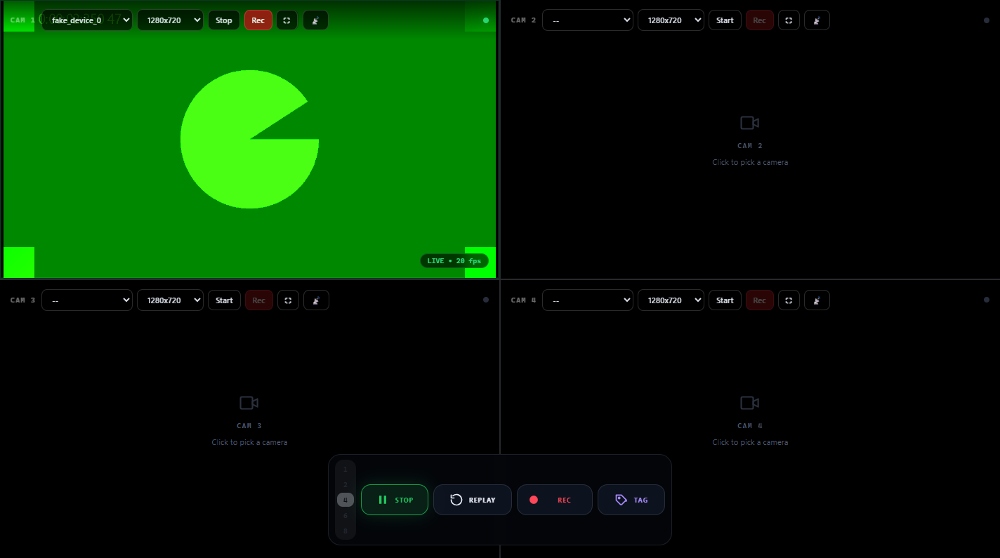
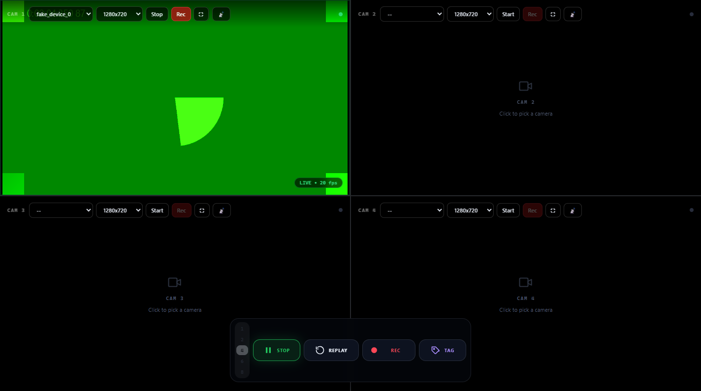
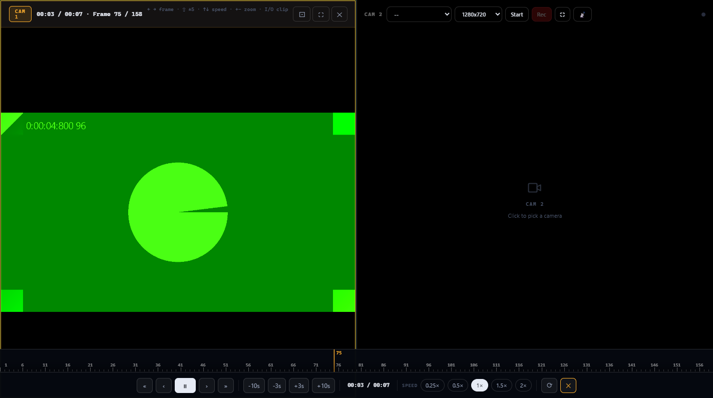
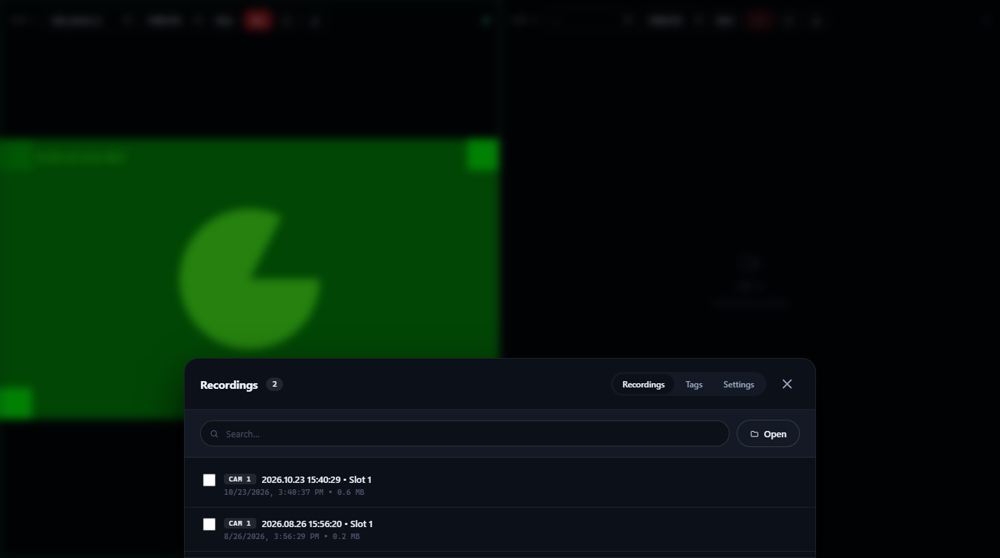

NeuroReplay хэрэглэгчийн гарын авлагаNeuroReplay user guide
Олон камерын дүрсийг зэрэг бичиж, instant replay, DVR ухраалт, frame-by-frame шинжилгээ, tag болон telestration хийх Windows программын өдөр тутмын заавар.
Day-to-day instructions for the Windows app that records several cameras at once and gives you instant replay, DVR rewind, frame-by-frame review, tags and telestration.
01Эхлэхээс өмнөBefore you start
- Windows 10 эсвэл Windows 11 компьютер
- Нэг буюу хэд хэдэн USB камер, эсвэл тохируулсан RTSP/IP камер
- Бичлэг хадгалах хангалттай сул дискний зай
- Идэвхтэй NeuroReplay license
- A Windows 10 or Windows 11 computer
- One or more USB cameras, or a configured RTSP/IP camera
- Enough free disk space for recordings
- An active NeuroReplay license
Windows-ийн Settings → Privacy & security → Camera хэсэгт desktop application-д camera access зөвшөөрсөн эсэхийг шалгана.
In Windows, check Settings → Privacy & security → Camera and make sure desktop apps are allowed to use the camera.
02Суулгах ба анх нээхInstall and first launch
NeuroReplay-Setup.exeinstaller-ийг ажиллуул.- Суулгах хавтсаа сонгоод Next → Install дар.
- Start цэс эсвэл desktop shortcut-аас NeuroReplay-ийг нээ.
- Run the
NeuroReplay-Setup.exeinstaller. - Choose an install folder and click Next → Install.
- Open NeuroReplay from the Start menu or the desktop shortcut.
Windows Unknown Publisher анхааруулга гарвал installer код гарын үсэггүй байж болно. Файлыг зөв эх сурвалжаас авсан эсэхээ баталгаажуулаад More info → Run anyway сонгоно.
If Windows shows an Unknown Publisher warning, the installer may be unsigned. Once you have confirmed the file came from the right source, choose More info → Run anyway.
03License идэвхжүүлэхActivate your license
Анх нээхэд license цонх гарна. Доорх хоёр аргын аль нэгийг ашиглана.
A license window opens on first launch. Use either of the two methods below.
.lic файл суулгахInstall a .lic file
- Install .lic file товч дар.
- Имэйлээр ирсэн
.licфайлыг сонго. - License хүчинтэй бол программ үндсэн цонхоо нээнэ.
- Click Install .lic file.
- Pick the
.licfile you received by email. - If the license is valid, the app opens its main window.
License key ашиглахUse a license key
- License Key tab руу ор.
- Гарсан Machine ID-г Copy дарж хуул.
- Machine ID-г license олгогчид илгээж key аваарай.
- Key-г талбарт буулгаад Activate дар.
- Open the License Key tab.
- Click Copy next to your Machine ID.
- Send the Machine ID to your license provider to receive a key.
- Paste the key into the field and click Activate.
License нь эхлэх, дуусах огноотой байж болно, мөн таны license-ийн хязгаар (жишээ нь camera-ийн дээд тоо) layout сонголтод нөлөөлнө. Идэвхжихгүй бол компьютерийн огноо, цаг, Machine ID болон key-г дахин шалга.
A license can have start and end dates, and its limits (for example the maximum number of cameras) affect which layouts you can pick. If activation fails, re-check the computer's date and time, the Machine ID and the key.
04Camera тохиргооCamera setup
- USB camera-уудаа холбоно, эсвэл RTSP/IP camera-гаа сүлжээнд бэлэн болгоно.
- Доод самбарын 1 / 2 / 4 / 6 / 8 товчоор camera-ийн тоог (layout) сонгоно. Ctrl+1/2/4/6/8 товчоор ч болно.
- Slot бүр дээрх selector-оос camera, resolution-оо сонгоно.
- START дарж бүх сонгосон camera-г нэг дор асаана, эсвэл slot бүрийн Start товчийг тусад нь ашиглана.
- Connect your USB cameras, or make your RTSP/IP camera reachable on the network.
- Pick the camera count (layout) with the 1 / 2 / 4 / 6 / 8 buttons in the bottom bar, or use Ctrl+1/2/4/6/8.
- Choose the camera and resolution in each slot's selectors.
- Press START to start every selected camera at once, or use each slot's own Start button.
Layout-ийг camera ажиллаж эсвэл бичиж байх үед солих боломжгүй — эхлээд STOP дарна.
You can't change the layout while cameras are running or recording — press STOP first.

RTSP camera ашиглах бол IP address, stream URL болон нэвтрэх мэдээллийг зөв оруулна. Нэвтрэх мэдээллийг нийтийн screenshot, log, website-д бүү оруул.
For RTSP cameras, enter the IP address, stream URL and credentials correctly. Never put credentials in public screenshots, logs or websites.
05Бичлэг хийхRecording
Camera ажиллаж байх үед slot дээр шууд дүрс, доод талд LIVE төлөв болон fps харагдана.
While a camera is running its slot shows the live picture, with a LIVE badge and fps readout.

- Нэг camera: тухайн slot-ийн Rec товч дарж эхлүүлж, дахин дарж зогсооно.
- Бүх camera: REC товч эсвэл R дарж бүх асаалттай camera-г зэрэг эхлүүлж / зогсооно.
- One camera: press that slot's Rec button to start, press again to stop.
- All cameras: press REC or R to start or stop every running camera together.
Бичлэг зогсоход файл автоматаар Library-д нэмэгдэнэ. Урт бичлэгийн өмнө дискний сул зайг шалгаарай.
When a recording stops, the file is added to the Library automatically. Check free disk space before long sessions.
07Instant Replay ба шинжилгээInstant Replay and review
Бичлэг үргэлжилж байх үед REPLAY товч эсвэл T дарахад сүүлийн агшин нээгдэнэ. Replay-г хаахдаа дахин T эсвэл Replay товчийг дарна.
While recording, press REPLAY or T to open the most recent moment. Press T or the Replay button again to close it.

« ‹ ▶ › », ±3s / ±10s үсрэлт, 0.25×–2× хурд.Replay player: frame ruler, « ‹ ▶ › », ±3s / ±10s jumps, 0.25×–2× speed.- Timeline-г чирж дурын агшин руу очно.
- Speed: товчоор эсвэл 1–5 (0.25× / 0.5× / 1× / 1.5× / 2×), ↑ / ↓ дарж нэг шатаар солино.
- Frame: ← / → (эсвэл , / .) 1 frame, Shift нэмбэл 5 frame.
- Zoom: + / − эсвэл хулганы дугуй. Томруулсан дүрсийг чирж pan хийнэ.
- I / O — clip-ийн эхлэх, дуусах цэг тэмдэглэнэ.
- Space (эсвэл K) — бүх camera-г зэрэг play/pause.
- Replay/player доторх telestration хэрэгслээр дүрс дээр зурж, заана. Zoom/pan хийхэд тэмдэглэгээ дүрстэйгээ уялдана.
- Timeline: drag to jump anywhere.
- Speed: use the buttons, or 1–5 (0.25× / 0.5× / 1× / 1.5× / 2×), or ↑ / ↓ to step.
- Frame step: ← / → (or , / .) for 1 frame, add Shift for 5.
- Zoom: + / − or the mouse wheel. Drag the zoomed picture to pan.
- I / O — mark the clip's in and out points.
- Space (or K) — play/pause all cameras together.
- Use the telestration tools in the replay/player to draw on the picture. Drawings stay locked to the image as you zoom and pan.
Дэлгэцийн хоцролт (delay monitor)Delay monitor
Тохиргооны Дэлгэц хоцролт (сек) талбарт секунд оруулна: 0 = live, 5 = таван секундын хоцролттой дүрс. Тохиргоо хадгалагдаж дараагийн session-д сэргээгдэнэ.
Enter seconds in the Display delay (sec) setting: 0 = live, 5 = picture delayed by five seconds. The setting is saved for the next session.
08Library буюу хадгалсан бичлэгүүдLibrary: saved recordings
Дээд талын бичлэгийн дүрс эсвэл Ctrl+L дарж Library-г нээнэ. Самбар нь Recordings, Tags, Settings гэсэн гурван tab-тай. Esc дарж хаана.
Open the Library from the recordings icon at the top or with Ctrl+L. It has three tabs: Recordings, Tags and Settings. Press Esc to close.

- Бичлэг дээр давхар товшиж player-ээр нээнэ.
- Rename — нэр өөрчилнө. Preview — хурдан үзнэ.
- Lock / Unlock — санамсаргүй устгалтаас хамгаална.
- Checkbox сонгож олон бичлэгийг зэрэг устгана. Устгахаас өмнө Lock төлөв болон сонголтоо шалга.
- Double-click a recording to open it in the player.
- Rename to change the name; Preview for a quick look.
- Lock / Unlock protects a recording from accidental deletion.
- Tick checkboxes to delete several at once. Check lock state and your selection before deleting.
Бичлэг болон tag metadata (sidecar) нь дараах хавтсанд хадгалагдана:
Recordings and their tag metadata (sidecar files) are stored in:
%USERPROFILE%\Videos\NeuroReplay\
09Export ба highlightExport and highlights
- Library-ээс бичлэгээ сонгоно.
- Player дотор эхлэх, дуусах хугацааг тохируулна.
- Export MP4 (эсвэл highlight export) сонгоно —
.webmбичлэг.mp4болно. - Файлын нэр, байршлыг сонгоно.
- Export дуустал эх файлыг устгахгүй, программыг хаахгүй.
- Select a recording in the Library.
- Set the start and end time in the player.
- Choose Export MP4 (or highlight export) — the
.webmrecording becomes an.mp4. - Pick a file name and location.
- Don't delete the source file or close the app until the export finishes.
Export амжилтгүй бол эх .webm файл байгаа эсэх, хадгалах хавтасны эрх, дискний сул зайг шалгана.
If an export fails, check that the source .webm still exists, that you can write to the output folder, and that there is free disk space.
10Гарын товчлууруудKeyboard shortcuts
| ТовчKey | ҮйлдэлAction |
|---|---|
| R | Бүх асаалттай camera-г бичих / зогсоохStart / stop recording on all running cameras |
| T | Instant Replay нээх / хаахOpen / close Instant Replay |
| Space | Live үед tag popup; Replay дотор бүх camera-г play/pauseLive: tag popup. In Replay: play/pause all cameras |
| ← → | Replay: 1 frame ухраах / урагшлуулах (Shift = 5 frame)Replay: step 1 frame back / forward (Shift = 5 frames) |
| ↑ ↓ | Instant Replay: хурд ихэсгэх / багасгах. Library player: zoomInstant Replay: speed up / down. Library player: zoom |
| 1–5 | Replay хурд: 0.25× / 0.5× / 1× / 1.5× / 2×Replay speed: 0.25× / 0.5× / 1× / 1.5× / 2× |
| + − | Replay pane: zoomReplay pane: zoom |
| I O | Clip-ийн эхлэх / дуусах цэгClip in / out point |
| Esc | Tag popup, Library самбар эсвэл Library player хаахClose the tag popup, Library drawer or Library player |
| Ctrl+1/2/4/6/8 | Camera-ийн тоо (layout)Camera count (layout) |
| Ctrl+L | Library нээхOpen the Library |
| Ctrl+T | Tags самбар нээхOpen the Tags panel |
Цэсний View хэсгээс UI горим (Minimal / Legacy), цэсийн хэлний тохиргооноос Монгол, English, Russian хэлийг сонгоно.
Use the View menu to switch UI mode (Minimal / Legacy), and the language setting in the menu to choose Mongolian, English or Russian.
11Асуудал шийдвэрлэхTroubleshooting
| АсуудалProblem | Шалгах зүйлWhat to check |
|---|---|
| Camera харагдахгүйCamera not showing | Өөр программ camera ашиглаж байгаа эсэх, USB холболт, Windows camera permission.Another app using the camera, USB connection, Windows camera permission. |
Camera error | Camera-г салгаж дахин холбоод программыг restart хийнэ.Unplug and reconnect the camera, then restart the app. |
| RTSP дүрс ирэхгүйNo RTSP picture | Stream URL, IP address, сүлжээ, authentication.Stream URL, IP address, network, authentication. |
| Бичлэг хадгалагдахгүйRecording not saved | %USERPROFILE%\Videos\NeuroReplay\ хавтасны бичих эрх, дискний зай.Write permission on %USERPROFILE%\Videos\NeuroReplay\, free disk space. |
| Replay хоосонReplay is empty | Тухайн camera бичиж байсан эсэх, replay-ийн төлөв.Whether that camera was recording, and the replay state. |
| Export амжилтгүйExport failed | Эх файл байгаа эсэх, output path, дискний зай.Source file exists, output path, free disk space. |
| License идэвхжихгүйLicense won't activate | Системийн огноо/цаг, Machine ID, key эсвэл .lic файлын хугацаа.System date/time, Machine ID, key or the .lic file's validity period. |
| Программ удаан байнаApp feels slow | Ашиглаагүй camera-г зогсоох, resolution багасгах, зэрэг ажиллаж буй программуудыг хаах.Stop unused cameras, lower the resolution, close other heavy apps. |
Асуудал үргэлжилбэл алдааны screenshot, программын болон Windows-ийн хувилбар, camera-ийн төрөл, гарсан цагийг support-д илгээнэ. Password, private key, license secret зэрэг нууц мэдээллийг илгээж болохгүй.
If the problem persists, send support a screenshot of the error, the app and Windows versions, the camera type and the time it happened. Never send passwords, private keys or license secrets.
12Холбоо барихContact
License, захиалга болон техникийн тусламж авахдаа NeuroReplay-ийн борлуулалт, support багтай холбогдоно.
For licenses, orders and technical help, contact the NeuroReplay sales and support team.
NeuroReplay — Iderbat Myagmardorj